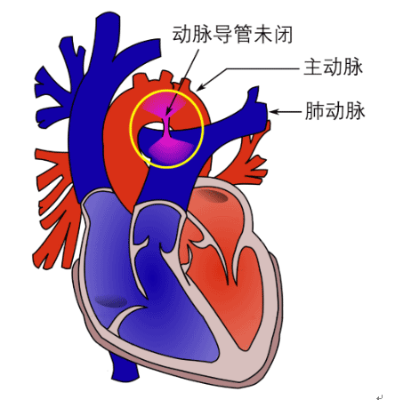动脉导管是胎儿期连接主动脉峡部与左肺动脉根部之间的生理性血流通道。约85%婴儿在生后2个月内动脉导管闭合，成为动脉韧带，逾期不闭合者即为动脉导管未闭。
临床表现：导管直径细、分流量小者常无明显症状。直径粗、分流量大者常并发充血性心力衰竭，表现为易激怒、气促、乏力、多汗以及喂养困难、发育不良等。当病情发展为严重肺动脉高压且出现右向左分流时，可表现为下半身发绀和杵状指/趾，称为“差异性发绀”。
治疗： 用手术人工关闭动脉导管
（1）结扎动脉导管
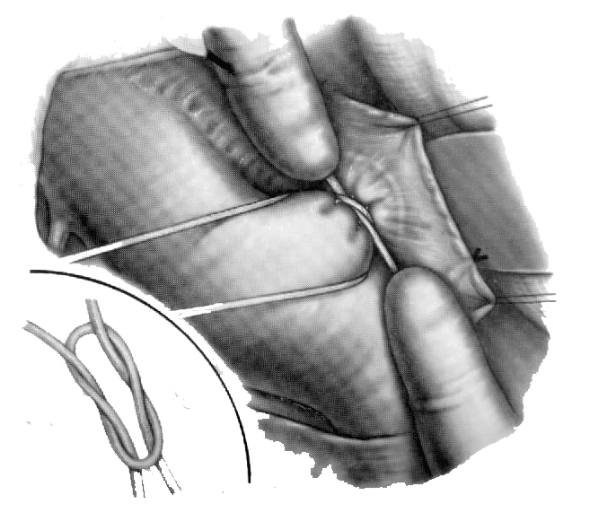
（2）切断动脉导管并缝合
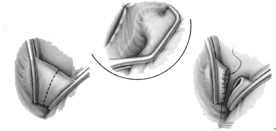
（3）补片修补导管内口
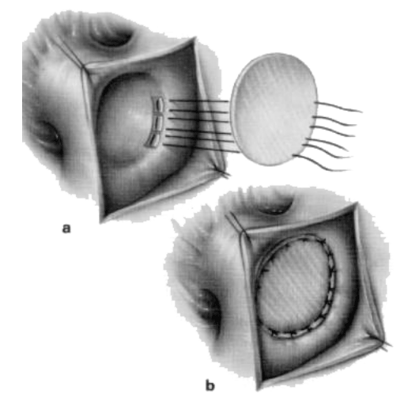
（4）导管封堵
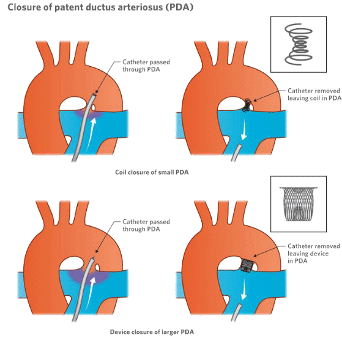
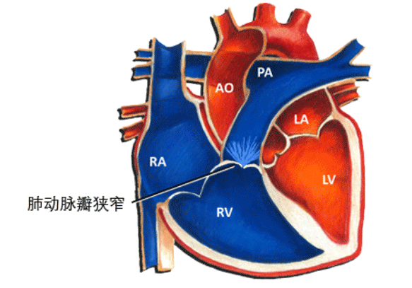
右心室和肺动脉之间存在先天性狭窄的畸形，称为肺动脉口狭窄。可单独存在或者是复杂心脏疾病的一部分。临床表现：轻度狭窄者可长期无症状。中重度狭窄者表现为活动后胸闷、气短、心悸甚至晕厥，活动耐量差，易疲劳。症状随年龄增长而加重，晚期出现肝大、下肢水肿、腹水等右心衰表现。
治疗：
（1）狭窄部位切开
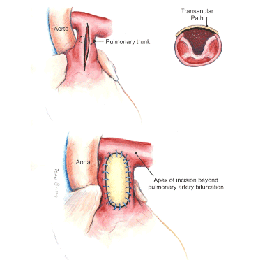
（2）经皮肺动脉瓣球囊扩张术
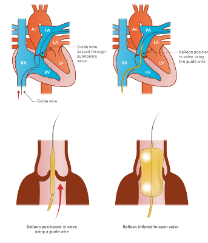
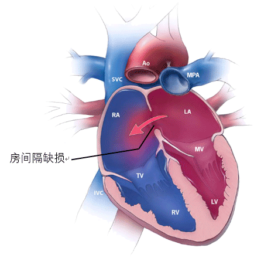
房间隔缺损是心房间隔先天性发育不全导致的左、右心房间异常交通。
临床表现：继发孔型儿童期多无明显症状，少数分流量大者出现发育迟缓、活动耐量差，青年期逐渐出现易疲劳、活动后气短等症状。原发孔型症状出现早，病情进展快。
治疗：
（1）直接缝合/补片材料修补
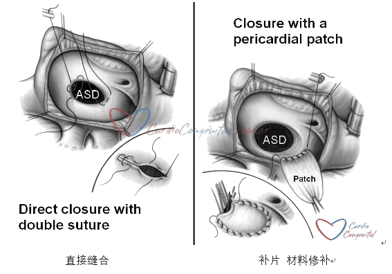
（2）介入封堵
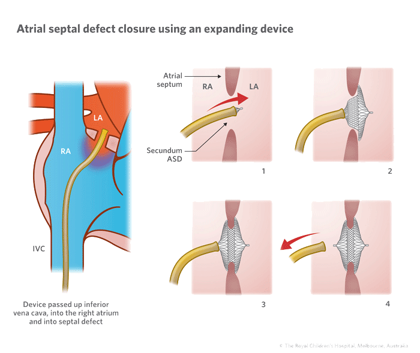
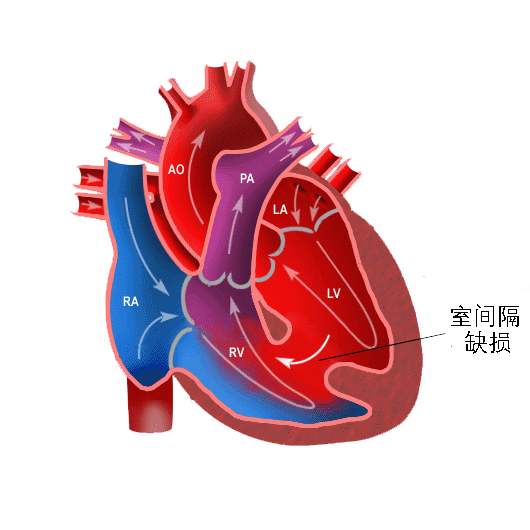
室间隔缺损是胎儿期室间隔发育不全所致的心室间异常交通。
临床表现：缺损小、分流量少者，一般无明显症状。分流量大者出生后即反复呼吸道感染、充血性心力衰竭、喂养困难和发育迟缓。能度过婴幼儿期的较大缺损者，表现为活动耐量差、劳累后心悸、气促、逐渐出现发绀和右心衰竭。室间隔缺损病人易并发感染性心内膜炎。
治疗：根据症状体征、心功能、缺损大小和位置、肺动脉高压程度、房室扩大的呢过情况综合判断。年龄和体重不是手术的决定因素。
心内直视手术仍然是治疗室间隔缺损的主要方法。手术方法与房间隔缺损基本相同。
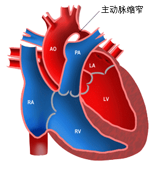
主动脉缩窄是指降主动脉起始段先天性狭窄。
临床表现：症状轻重、出现早晚与缩窄程度、是否合并心血管畸形有关。若缩窄较轻，不合并其他心血管畸形，多无明显症状，常在体检时发现上肢高血压。缩窄较重者出现头痛、头晕、耳鸣、眼花、气促、心悸、面部潮红等高血压症状，并有下肢易麻木、发冷或间歇性跛行等缺血症状。严重主动脉缩窄合并心脏畸形者，症状出现早，婴幼儿期即有充血性心力衰竭、喂养困难和发育迟缓。
治疗：当上、下肢动脉收缩压差>50mmHg，缩窄处管径小于主动脉正常段内经50%，即具备手术指征。单纯主动脉缩窄者，若上脉动脉收缩压>150mmHg应及时手术。婴幼儿期反复肺部感染、心力衰竭或合并其他心脏畸形，应尽早手术和一期矫治。无症状者，目前认为4-6岁择期手术为宜。年龄过小者易发生术后远期再狭窄，年龄过大者主动脉分支易出现血管硬化等继发改变。
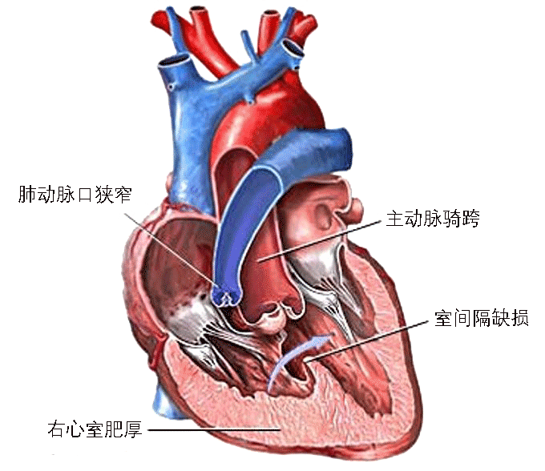
法洛四联症是一种具有特征性肺动脉口狭窄和室间隔缺损的心脏畸形，主要包括四种病理解剖：
肺动脉口狭窄
室间隔缺损
主动脉骑跨
右心室肥厚
临床表现：大多数病人出生即有呼吸困难，生后3-6个月出现发绀，并随年龄增长逐渐加重。由于组织缺氧，体力和活动耐量均较同龄人差，伴喂养困难、发育迟缓。蹲踞是特征性姿态，多见于儿童期。蹲踞时发绀和呼吸困难有所减轻。缺氧发作多见于单纯漏斗部狭窄的婴幼儿，常发生在清晨和活动后，表现为骤然呼吸困难，发绀加重，甚至昏厥、抽搐死亡。
治疗：根治手术的两个必备条件：1.左心室发育正常，左心室舒张末期容量指数大于等于30ml/m2；2.肺动脉发育良好，McGoon比值大于等于1.2或Nakata指数大于等于150mm2/m2.对不具备上述条件，或者冠状动脉畸形影响右心室流出道疏通的病人，应先行姑息手术。有症状的新生儿和婴儿应早期手术，符合条件者应实施一期根治。对于无症状或症状轻者，目前倾向于1岁左右行择期根治术，以减少继发性心肌损害。无论根治还是姑息手术，禁忌证为经内科治疗无效的顽固性心衰、严重肝肾功能损害。
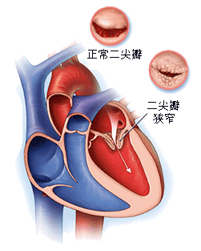
在风湿性心脏瓣膜病中，最常累及二尖瓣，主动脉瓣次之，三尖瓣很少见，肺动脉瓣则极为罕见。
临床表现：临床症状主要取决于瓣口狭窄的程度。当瓣口面积缩小至62.5px2左右，心脏听诊虽有二尖瓣狭窄的杂音，静息时可无症状出现。瓣口面积小于37.5px2时，左心房排血困难，肺部慢性阻性淤血，肺顺应性减低，临床上可出现气促、咳嗽、咯血、发绀等症状。气促通常在活动时出现，其轻重程度与活动量大小有密切关系。
治疗：外科治疗的目的是扩大二尖瓣瓣口面积，解除左心房排血障碍，缓解症状，改善心功能。无症状或心脏功能属于I级者，不主张施行手术。有症状且心功能II级以上者均应手术治疗。
（1）经皮球囊二尖瓣成形术
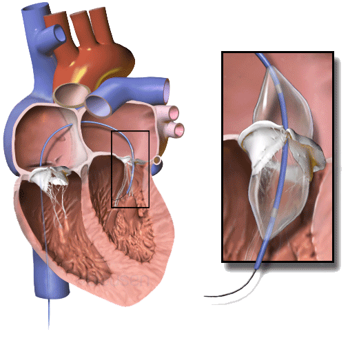
（2）人工瓣膜替换术
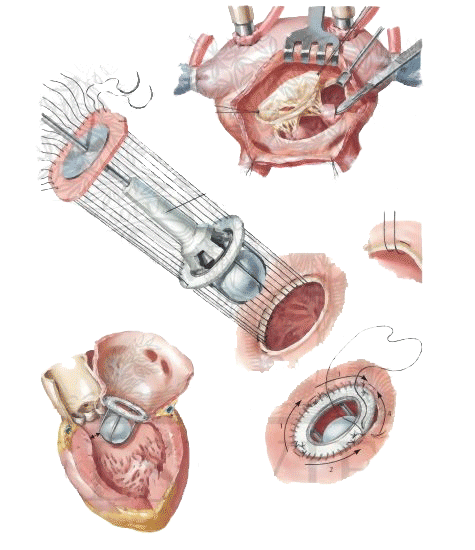
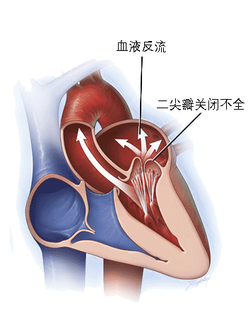
左心室收缩时，由于两个瓣叶不能对拢闭合，一部分血液反流入左心房，使排入体循环的血流量减少。
临床表现：病变轻、心脏功能代偿良好者可无明显症状。病变较重或历时较久者可出现乏力、心悸，劳累后气促等症状。急性肺水肿和咯血的发生率远较二尖瓣狭窄少。临床上出现症状后，病情可在较短时间内迅速恶化。
治疗：二尖瓣关闭不全症状明显，心功能受影响，心脏扩大时即应及时在体外循环下进行直视手术。手术可分为两种：1.二尖瓣修复成形术 2.二尖瓣替换术。
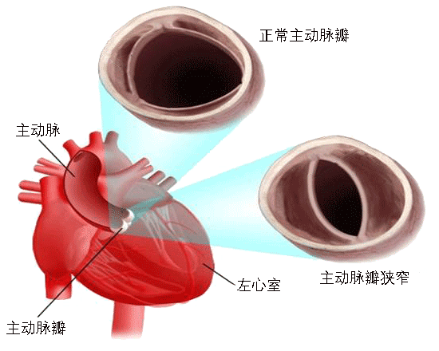
主动脉瓣狭窄是由于先天性瓣叶发育畸形或者风湿性病变侵害主动脉瓣致瓣叶增厚粘连，瓣口狭窄。
临床表现：轻度狭窄病例没有明显的症状。中度和重度狭窄者可有乏力、眩晕或昏厥、心绞痛、劳累后气促、端坐呼吸、急性肺水肿等症状，并可并发细菌性内膜炎或猝死。
治疗：临床上呈现心绞痛、昏厥或心力衰竭者，一旦出现症状，病情往往迅速恶化，在2-3年内有较高的猝死发生率，故应争取尽早施行手术治疗，切除病变的瓣膜，进行人工瓣主动脉膜替换术。经心尖或经皮支架瓣膜植入术在近年得到应用，但仅在不适合手术的病人才考虑选用。
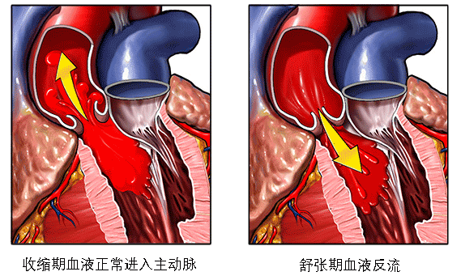
主动脉瓣关闭不全是主动脉瓣叶结构异常，导致瓣叶不能严密对合，使舒张期血液自主动脉反流入左心室。
临床表现：轻度关闭不全病例，心脏代偿功能较好，没有明显症状。早期症状为心悸、心前区不适、头部强烈搏动感。重度关闭不全者常有心绞痛发作、气促，并可出现阵发性呼吸困难，端坐呼吸或急性肺水肿。
治疗：临床上出现症状，如呈现心绞痛或左心室衰竭症状，则可在数年内病情恶化或发生猝死，故应争取尽早施行人工瓣膜替换术。
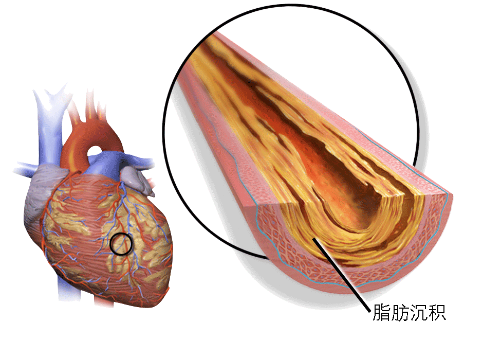
冠状动脉粥样硬化性心脏病简称冠心病，是成人因心脏病死亡的主要原因。
主要病变是冠状动脉内膜脂质沉着、局部结缔组织增生、纤维化或钙化，形成粥样硬化斑块，造成管壁增厚、管腔狭窄或阻塞。
冠心病有不同的临床表现：1.隐匿型或无症状型冠心病 2.心绞痛 3.缺血性心肌病 4.心肌梗死 5.猝死 近年趋向于根据发病特点和治疗原则不同分为两大类：
1.慢性冠脉病 2.急性冠状动脉综合征。前后包括稳定型心绞痛、缺血性心肌病和隐匿型冠心病等；后者包括不稳定型心绞痛，非ST段抬高型心肌梗死和ST段抬高型心肌梗死，也有将冠心病猝死包括在内。
（1）稳定型心绞痛：阵发性前胸压榨性疼痛或憋闷感觉，常发生于劳力负荷增加时，休息或用硝酸制剂后疼痛消失。治疗：a. 经皮冠状动脉介入治疗（PCI）
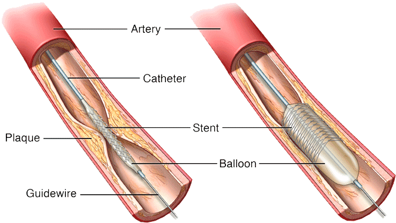
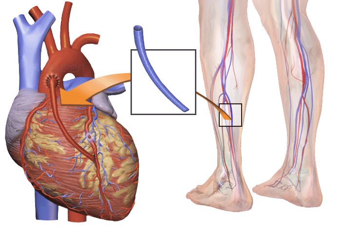
（2）不稳定型心绞痛：程度更重，持续时间更长，休息时也可发生
（3）急性ST段抬高型心肌梗死（STEMI）：指急性心肌缺血性坏死
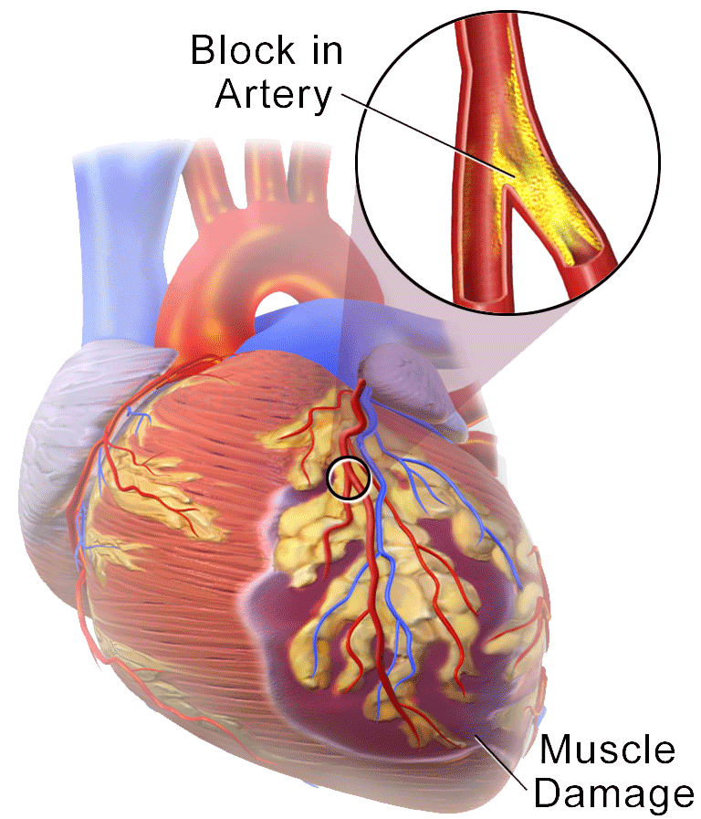
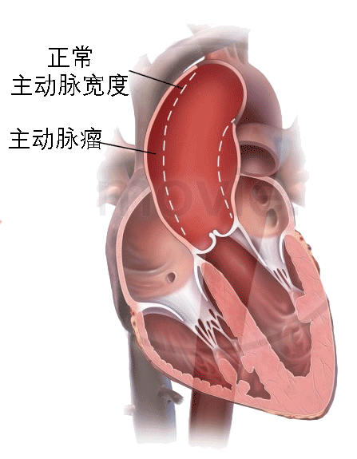
各种病因所致局部主动脉壁扩张或膨出，达到正常管径1.5倍以上，即称为主动脉瘤。
临床表现：胸主动脉瘤常见于中老年人，遗传性、感染性或创伤性病因所致动脉瘤好发于青壮年。病程早期多无症状、体征，常在影像学检查时偶尔发现。动脉瘤形成后不可逆转地持续增大，增加左心室容量负荷并压迫周围组织结构。可发生胸痛、压迫症状及血栓形成。
治疗：胸主动脉瘤明确诊断后应积极地施行侵入性治疗，包括手术、介入和杂交治疗三大类。
（1）手术治疗：置入人工血管替换病变的胸主动脉
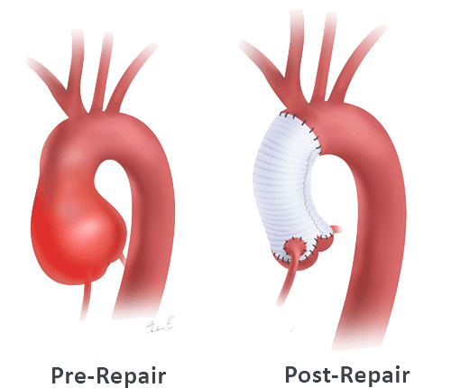
（2）介入治疗：置入带膜支架人工血管
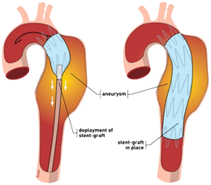
（3）杂交治疗：使用人工血管和带膜支架人工血管共同矫治
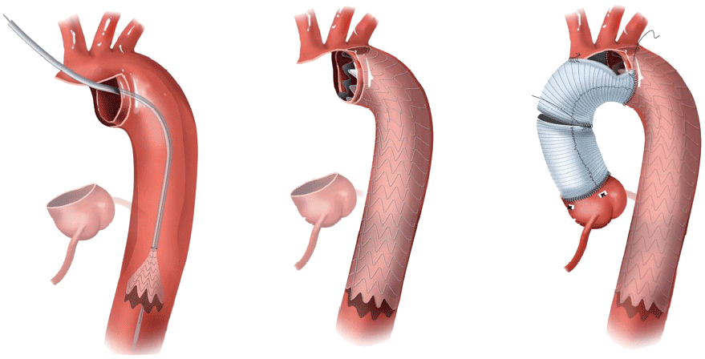
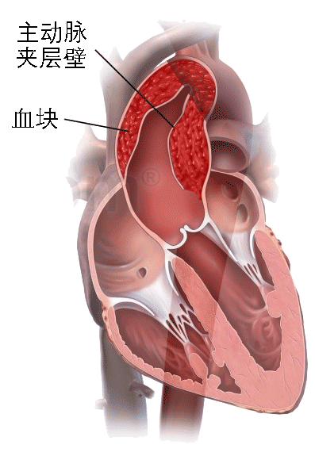
主动脉内膜和中层弹力膜发生撕裂，血液进入主动脉壁中层，形成壁间假腔，并通过一个或数个破口与主动脉真腔相交通，称为主动脉夹层。
临床表现：急性期90%病人有前胸、后背或腹部突发性剧烈疼痛，疼痛可沿大动脉走行方向传导和转移，75%病人伴有高血压和心动过速，病人多烦躁不安、大汗淋漓。随病程进展，主动脉夹层病人可能出现与主动脉破裂、主动脉瓣关闭不全和（或）重要脏器组织供血障碍相关的症状和体征。
治疗：与主动脉瘤相同。
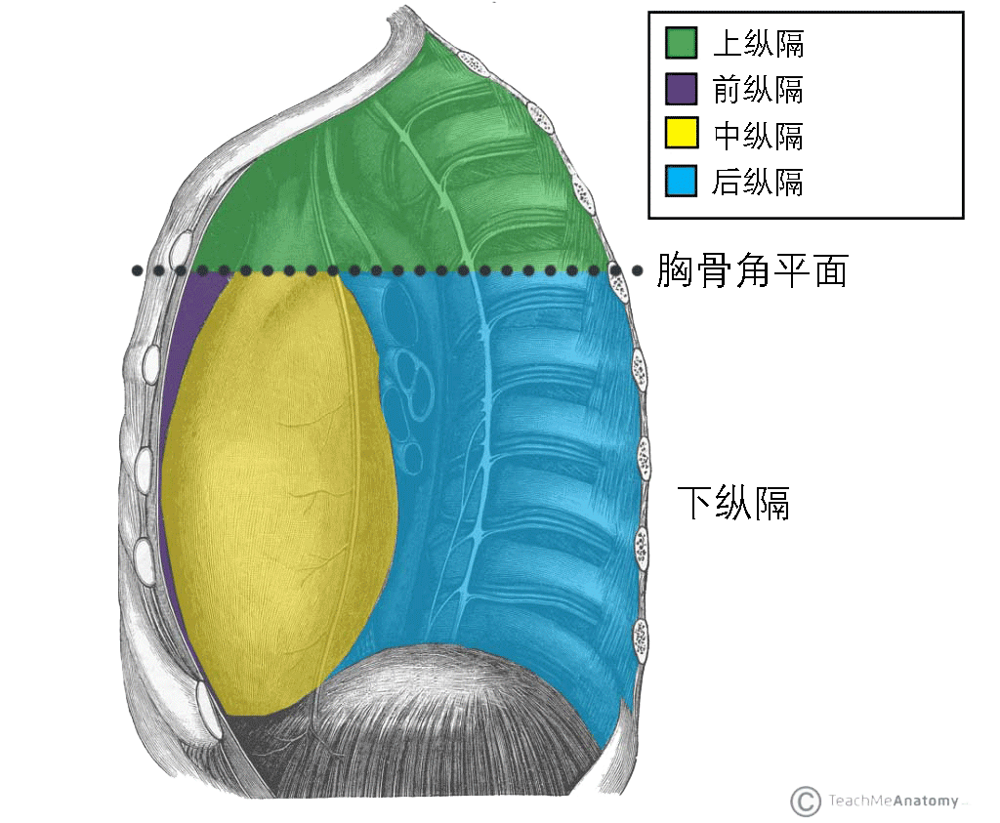
纵膈实际上是一间隙，前为胸骨，后为胸椎，两侧为纵膈胸膜，上连颈部，下止于膈肌。纵膈内有心脏、大血管、食管、气管、神经、胸腺、胸导管、丰富的淋巴组织和结缔脂肪组织。临床最常见的纵膈分区法是“四分法”，即以胸骨角与第4胸椎下缘的水平连线为界，把纵膈分成上、下两部。下纵膈再以心包前后界分为前、中、后三部分。
胸腺瘤是最常见的纵隔肿瘤之一
临床表现：一般而言，纵膈肿瘤的症状与肿瘤大小、部位、生长方向和速度、质地、性质等有关。良性肿瘤由于生长缓慢，向胸腔方向生长，可生长到相当大的成都尚无症状或很轻微。相反，恶性肿瘤侵蚀程度高，进展迅速，故肿瘤较小时已经出现症状。常见的症状有胸痛、胸闷、刺激或压迫呼吸系统、神经系统、大血管、食管的症状。此外，还可出现一些与肿瘤性质相关的特异性症状。
治疗：绝大多数原发性纵膈肿瘤只要无其他禁忌症，均应外科治疗。
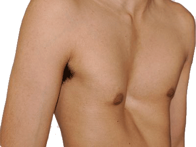
漏斗胸是胸骨连同肋骨向内向后凹陷，呈舟状或漏斗状；胸骨体剑突交界处凹陷最深。有家族倾向或伴有先天性心脏病。
临床表现：婴儿期漏斗胸压迫症状较轻者常未被注意。有些虽有吸气性喘鸣和胸骨吸入性凹陷，但常未能检查出呼吸道阻塞的原因。患儿常体形瘦弱，不好动，易患上呼吸道感染，活动能力受到限制。用力呼气量和最大通气量明显减少。活动时出现心慌，气短和呼吸困难。体征除胸廓畸形外，常有轻度驼背、腹部凸出等特殊体型。
治疗：
一般采用手术方法进行矫治。传统手术方法切口长，创伤大。近年来，微创漏斗胸矫正术（Nuss手术）已广泛应用于临床。该手术采用两胸侧壁小切口，在胸腔镜辅助下于畸形胸骨后置入特殊材质的矫形钢板，无需切断胸骨及肋骨，手术效果较满意，创伤小。
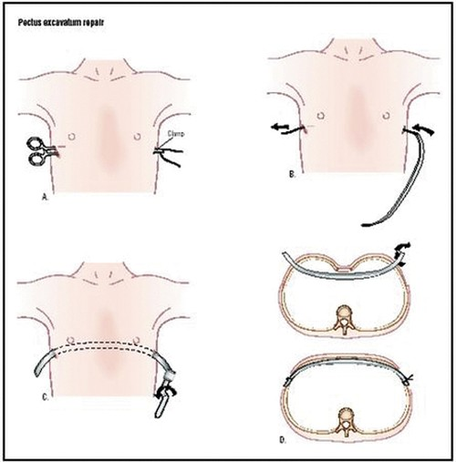